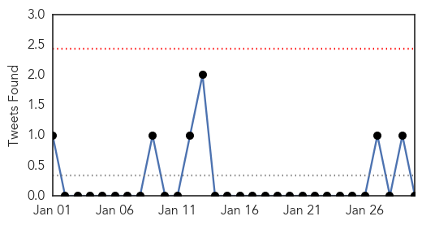

30 Day Trends
Web: 0 alerts, 0 warnings
Twitter: 0 alerts, 0 warnings
Top Articles:
- 1.000
- FluWatch report: January 18 to January 24, 2015 (Week 3)
- 0.999
- Minnesota reports ‘swine flu’ H1N1v case
- 0.997
- Public Health Notice Update: H7N9 avian flu
- 0.996
- Indiana reports highest number of flu-related deaths in a decade
- 0.996
- 58 Oklahomans have died from flu this season
- 0.996
- 1,035 people hospitalized and 56 have died of flu this season in Toronto
- 0.995
- Austria 'on threshold of flu outbreak'
- 0.994
- Flu Scan for Jan 30, 2015
- 0.993
- Second H7N9 bird flu case confirmed in B.C.; husband of first patient
- 0.992
- Second bird flu case confirmed in B.C.
- 0.992
- Husband of woman diagnosed with H7N9 bird flu confirmed as second case
- 0.992
- 52 flu-related deaths in Alberta so far this season
- 0.989
- Canada's Flu Vaccine Didn't Work Very Well This Year
- 0.986
- No H3N2 flu vaccine available until April as Hong Kong death toll jumps to 81
- 0.986
- The Reporter Newspaper – BAHA seizes $600,000 worth of breeder hens to contain bird flu outbreak at Spanish Lookout
- 0.979
- Halting the spread of bird flu
- 0.950
- Influenza: the mother of all mild respiratory infections
- 0.924
- Officials: Flu numbers have tripled in Cayuga County
- 0.912
- Tamiflu Cuts 1 Day Off Average Flu Bout, Study Finds
- 0.820
- Flu toll reaches 108 as it continues to claim lives in Indiana
- 0.805
- H5N1 bird flu strikes 12th Nigerian State
- 0.790
- This year’s flu shot won’t help you
- 0.750
- JRMC visitation restrictions lifted
- 0.616
- Canada reports 2nd H7N9 avian flu case
- 0.558
- India, Bangladesh’s scientists agree to share information on infectious disease
- 0.525
- Nevada confirms avian flu case
Top Tweets:
-
No tweets found for Jan 30, 2015
Web/News Articles

Tweets
Article Locations

Article Confidences